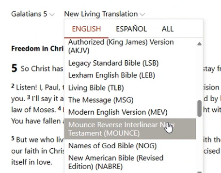
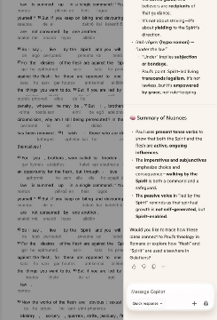

BSF day! BSF day! Quick unrelated aside before I get into it — this is worth a watch if you have a spare minute.
Yesterday's email covered using Copilot in Edge for Bible study, and I mentioned some ideas for original-language insight that I “hadn't tried yet.” Well, I tried it.
I went to biblegateway.com, opened up John 1, then switched over to Galatians 5, and changed the translation to the Mounce Reverse Interlinear.

Then I clicked “Chat” in the top right, same as before, and asked two questions about the Greek grammar in that chapter.
What came back was a genuinely long, detailed response. Here's the summary panel it ended with:

I like it. For comparison, some other original-language tools worth knowing about: blueletterbible.org, biblehub.com, the “Bible and Strong's Concordance” app, scripture4all.org, and discoverybible.com (14-day free trial — I ended up paying $347 for it, which in retrospect might have been a bit much). I also haven't tried gospeltruth.ai yet, an AI tool built by the SDA church.
My plan now is to run Copilot's answers side by side with these dedicated tools and see how they hold up. Honestly, though, the convenience of staying inside the Edge browser is hard to beat. — Erv
Comments